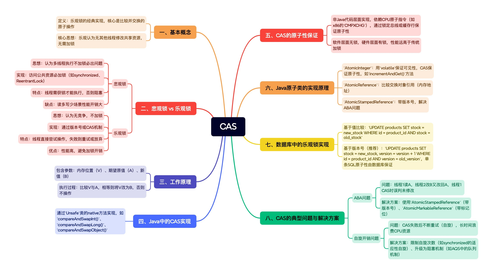

深入理解CAS：乐观锁的核心原理与实战应用
你是否曾好奇，像JDK中AtomicInteger这样的并发工具，为何能在不加锁的情况下安全地处理多线程竞争？其核心奥秘正是一种名为CAS（比较并交换） 的硬件级原子操作。它不仅颠覆了“同步必加锁”的传统思维，更是构建高性能并发系统的基石。本文将为你彻底解析CAS的工作原理，揭示其如何通过一条CPU指令实现高效的无锁同步，并深入探讨其著名的ABA问题与解决方案，带你从本质上理解现代并发编程的精妙之处。

什么是CAS？
CAS（Compare And Swap，比较并交换）是乐观锁的一种经典实现。它的核心思想是：乐观地认为没有其他线程会同时修改共享资源，因此不需要加锁，而是通过比较并交换的原子操作来保证数据一致性。
悲观锁 vs 乐观锁
悲观锁
- 思想：悲观地认为如果不严格加锁，多线程执行一定会出问题
- 实现：每次访问公共资源都必须加锁（如synchronized、ReentrantLock）
- 特点：线程必须获得锁后才能执行，否则阻塞等待
- 缺点：性能开销大，特别是在读多写少的场景
乐观锁
- 思想：乐观地认为没有竞争，因此不加锁
- 实现：通过版本号或CAS机制实现
- 特点：线程直接尝试操作，如果失败则重试或放弃
- 优点：性能高，避免了加锁的开销
CAS工作原理
CAS操作包含三个参数：
- 内存位置（V）
- 期望原值（A）
- 新值（B）
执行过程：
- 比较内存位置V的值与期望原值A
- 如果相等，将内存位置V的值修改为新值B
- 如果不相等，不做任何操作
生动比喻：会议室预订系统
- 会议室门口有一个数字状态牌，显示
0表示会议室空闲，显示1表示已预订。 - 两个员工（线程A和线程B）同时想要预订这间会议室（访问共享资源）。
预订流程（CAS操作）如下：
- 查看状态（Compare）：两位员工都看到状态牌显示
0（期望原值 A），认为会议室空闲。 -
尝试预订（Swap）：
- 员工A动作更快，他立刻走上前，比较状态牌当前值是否还是他刚才看到的
0。 - 发现确实是
0，于是他成功地将状态牌交换为1（新值 B），预订成功。
- 员工A动作更快，他立刻走上前，比较状态牌当前值是否还是他刚才看到的
-
竞争失败：
- 员工B随后也走上前，准备将自己的
0换成1。 - 但他比较后发现，状态牌的当前值 (
1) 与他的期望值 (0) 不匹配。 - 这表示资源已经被修改（会议室已被预订），他的操作失败。他可以选择稍后重试（自旋）或放弃。
- 员工B随后也走上前，准备将自己的
Java中的CAS实现
在Java中，CAS通过Unsafe类提供的方法实现：
// AtomicInteger中的CAS实现
public final boolean compareAndSet(int expect, int update) {
return unsafe.compareAndSwapInt(this, valueOffset, expect, update);
}
主要方法包括：
compareAndSwapInt()：用于int类型compareAndSwapLong()：用于long类型compareAndSwapObject()：用于对象引用
CAS的原子性保证
CAS操作需要保证原子性，但这并非由Java代码层面实现：
- Java层面：通过native方法调用C++实现
- 硬件层面：依赖CPU的原子指令（如x86架构的
CMPXCHG） - 实现方式：通过锁定总线或缓存行保证原子性
CAS真的是无锁吗？
从不同层次看：
- 软件层面：无锁（没有使用操作系统mutex）
- 硬件层面：有锁（通过锁定总线实现原子性）
但无论如何，CAS的性能远高于传统的加锁方式。
Java原子类的实现原理
AtomicInteger
public class AtomicInteger {
private volatile int value; // volatile保证可见性
public final int incrementAndGet() {
return unsafe.getAndAddInt(this, valueOffset, 1) + 1;
}
}
- volatile：保证值的可见性
- CAS：保证原子性
AtomicReference
比较并交换的是对象引用（内存地址），而非对象内容。
AtomicStampedReference
解决ABA问题的方案：
- 不仅比较值，还比较版本号
- 版本号一直递增，避免ABA问题
数据库中的乐观锁实现
在数据库层面也可以使用CAS思想实现乐观锁：
基于值比较
UPDATE products
SET stock = new_stock
WHERE id = product_id AND stock = old_stock
基于版本号（推荐）
UPDATE products
SET stock = new_stock, version = version + 1
WHERE id = product_id AND version = old_version
注意：单条SQL的原子性由数据库保证，不需要额外考虑。
CAS的典型问题与解决方案
1. ABA问题
问题描述：
- 线程1读取值为A
- 线程2将值改为B，然后又改回A
- 线程1进行CAS操作，发现值还是A，认为没有被修改过
解决方案：
- 使用
AtomicStampedReference（带版本号） - 使用
AtomicMarkableReference（带标记位）
2. 自旋开销问题
问题描述：
- CAS失败后会不断重试（自旋）
- 长时间自旋会浪费CPU资源
解决方案：
- 限制自旋次数（如synchronized的适应性自旋）
- 升级为阻塞机制（如AQS中的队列机制）
实战应用场景
1. 计数器
AtomicInteger counter = new AtomicInteger(0);
counter.incrementAndGet(); // 原子性递增
2. 状态标记
AtomicBoolean isRunning = new AtomicBoolean(true);
if (isRunning.compareAndSet(true, false)) {
// 成功停止服务
}
3. 非阻塞算法
实现无锁队列、无锁栈等并发数据结构。
总结
CAS是并发编程中的重要机制，它具有以下特点：
- 高性能：避免了传统锁的开销
- 乐观思想：假设竞争很少，先操作再冲突检测
- 硬件支持：依赖CPU原子指令保证原子性
- 适用场景：读多写少、竞争不激烈的场景
但CAS也不是银弹，它存在ABA问题、自旋开销等局限性。在实际开发中，需要根据具体场景选择合适的技术：
- 低竞争场景：优先考虑CAS和乐观锁
- 高竞争场景：可能需要使用传统锁机制
- 复杂操作：考虑使用AQS等高级并发工具
理解CAS的原理和实现方式，是掌握Java并发编程的重要一步，也是面试中经常考察的关键知识点。